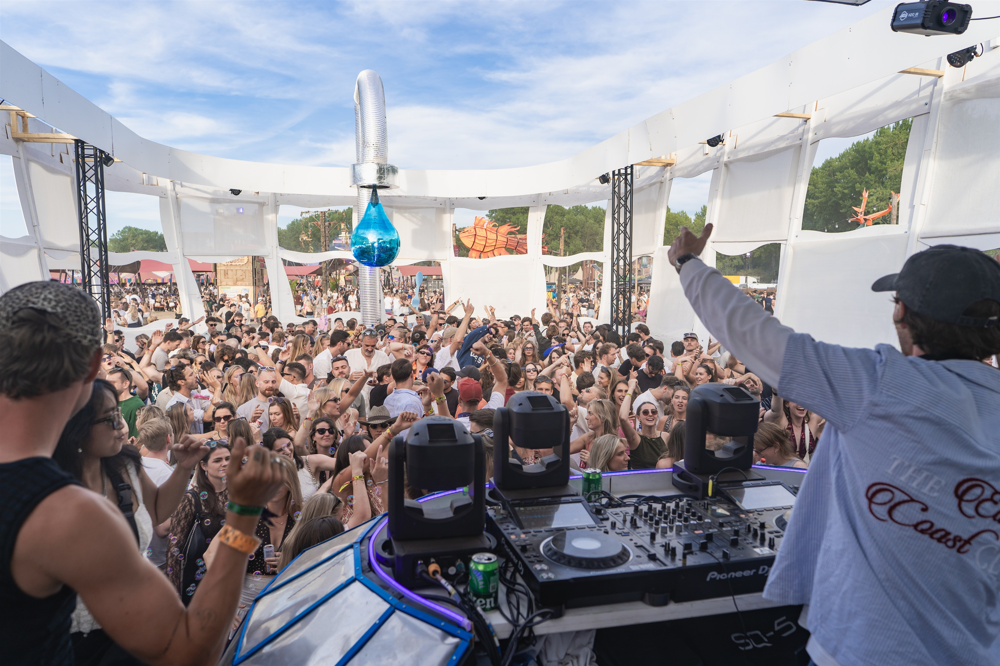
Music. Friends. All going down.
WELCOME TO
THE DEEP END.
Duik erin. Blijf hangen.
De beste ideeën lopen uit de hand.
THE NEXT
DIVE.
NIEUW EVENT · BINNENKORT MEER
De volgende duik laat nog even op zich wachten. Datum, locatie en tickets vind je hier zodra ze bekend zijn.
GO DOWN.
FEEL ALIVE.
Een collectief voor muziek, hostings en events. Met vrienden voor de booth en chaos erachter.
Down the Drain is die plek waar je per ongeluk belandt en zes uur later nog steeds staat. We bouwen een wereld om de muziek heen. Op Solar werd dat een badkuip. Wat volgt? Dat zie je vanzelf.
GOOD MUSIC. QUESTIONABLE IDEAS.ONE BIG
BATHROOM.
Een badkuip als dj-booth. Een douche boven de dansvloer. En niemand die op tijd naar huis ging.
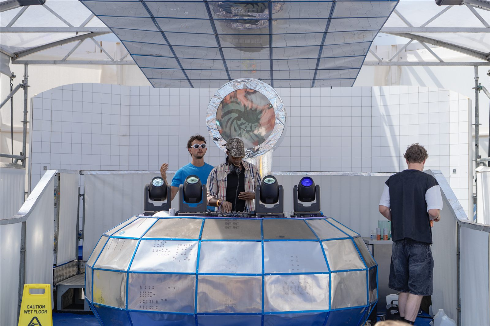
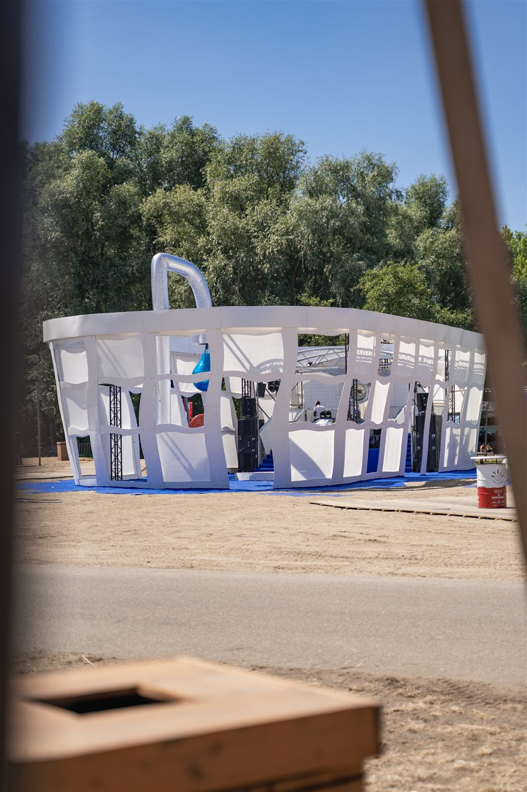
GEEN BAD.
WEL EEN
WARM WELKOM.
WISH YOU
WERE WET.
Van de eerste bubbels tot de laatste plaat. Een kleine selectie van een groot weekend.
{kind=link}
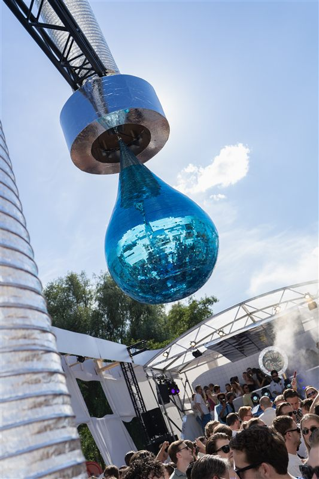
01 / LET IT FLOW ↗{kind=link}
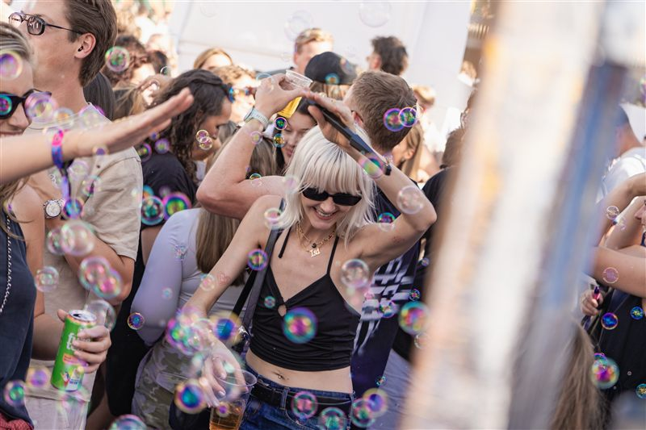
02 / BUBBLE TROUBLE ↗{kind=link}
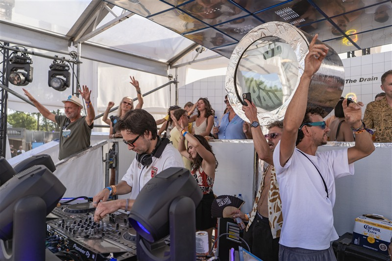
03 / IN GOOD HANDS ↗{kind=link}
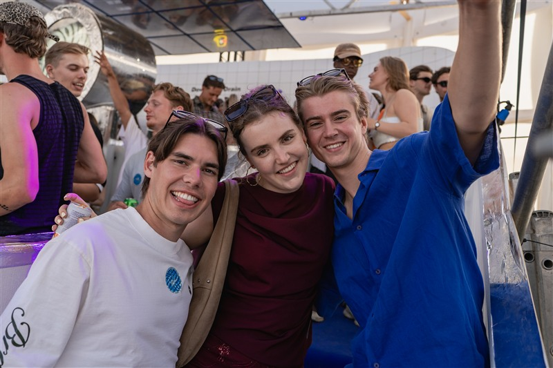
04 / THE USUAL SUSPECTS ↗{kind=link}
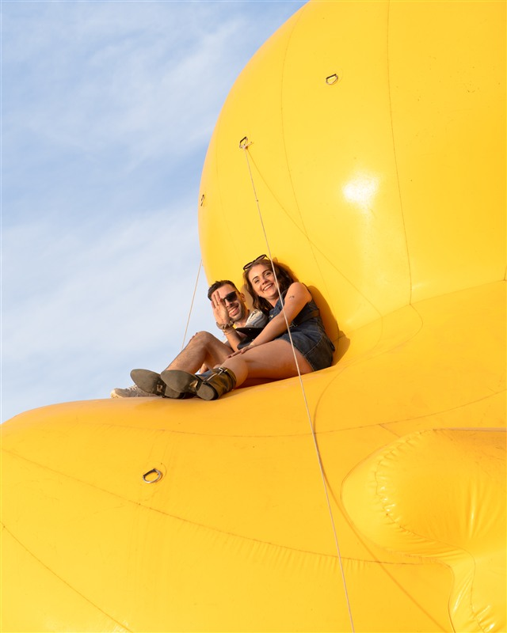
05 / BATH ESSENTIALS ↗{kind=link}
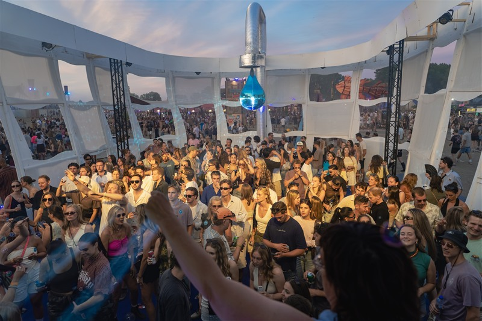
06 / ONE MORE TRACK ↗{kind=link}
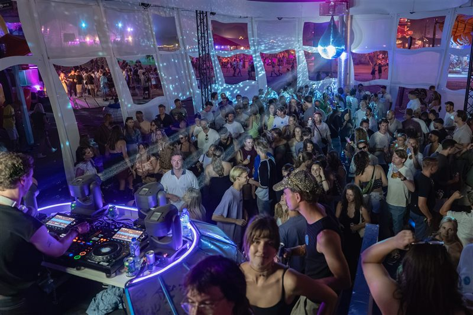
07 / AFTER HOURS ↗{kind=link}
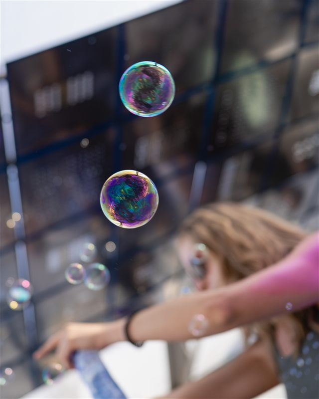
08 / FLOATING HOME ↗Een weekend. Heel veel goede herinneringen. Nog een keer naar boven ↑
LET’S GO
DOWN TOGETHER↘
Een hosting, een samenwerking of een veel te goed idee?
Daar maken we graag ruimte voor.
Contactgegevens volgen binnenkort.